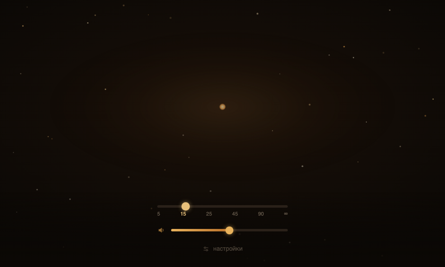
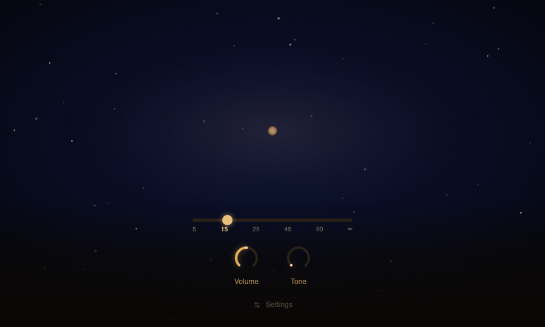

A focus timer with no digits on screen. Time is made of sound: it rises as you begin, holds steady through the session, and eases off as you arrive. Nothing is streamed and nothing is played back — every sound is computed on the device while you work.


A web version, so the sound can be heard on a phone and without installing anything.
The session has two endings, and they are not the same. When the timer ends it, it ends slowly: a dawn rather than a bell. When the person ends it, it ends at once — a stop is usually needed for a reason that will not wait.
Sound is generated, not played. There are no audio files, no stream and no account; the noise is synthesised continuously, so it never loops and never clicks. Nothing is recorded inside the extension, which is also why there is nothing to send anywhere.
The toolbar icon carries an arc of the distance still ahead, not the time already spent — no digits, no red, no acceleration toward the finish. It is visible on any tab without injecting anything into the pages you are reading.
The position is one sentence: it accompanies, it does not punish. Attention is not missing, it is hard to regulate — which makes two moments hard, not one: getting in, and being torn out. A timer that forces the start and then breaks the flow with a bell gets both of them wrong.
A tonal layer was added over the noise, and its knob defaults to zero for everyone. The product promises warm noise; a chord offered instead is not what anyone arrived for. The layer is something to be found, not something served in place of the thing that was described.
Turning the tone up could have faded the noise out, but then the two would simply trade places and the road under the sound would disappear. The noise is thinned instead — its wall drops and its level falls to a floor it does not cross. The tone travels on the noise, not in place of it.
A generative layer with no ending is an endlessness, and a session needs an arrival. So the layer knows the phase: it gathers as the session begins, holds through the middle, stops accumulating during a pause, and resolves at the end — the chord returns home and the upper voices leave. It does not stop. It finishes.
The ceremony belongs to the ending nobody asked for. An automatic ending is slow, because it has to mark a transition the person did not choose. A manual stop is immediate, because it was chosen, and making someone wait through a ceremony they interrupted is the opposite of respect.
Two files are attached loosely: if either is missing the extension does not crash, it silently loses a feature. A hand-assembled archive would therefore ship a product with no icon, or with no tone, and give no sign of it. Archives are now built only by a script that fails when a file is absent from disk or from the finished package.
Audio runs in a separate offscreen document, and the panel is only a view onto it through the same interface the engine would offer directly. Closing the panel hides the flight; it does not end it.